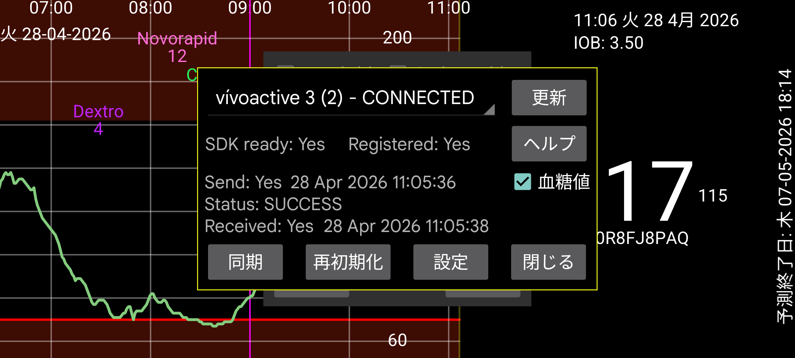

ar be de es fr hi it ja ko nl pl pt ru tr uk uz zh en
Kerfstok (https://apps.garmin.com/en-US/apps/b6348ccc-86d8-4780-8013-d9e19fed5260、https://www.juggluco.nl/Kerfstok/index.html も参照)は、サードパーティアプリを許容する Garmin スポーツウォッチ向けのウォッチアプリです。1.6.0 以降はタッチスクリーンのないウォッチにも対応しています。Kerfstok の用途は次のとおりです:
数値を入力し、Juggluco と交換する;
Juggluco から受信したストリーム血糖値を表示する;
スポーツ中にこの血糖値を、速度や距離と共に表示する。アクティビティは記録され、Garmin Connect アプリで表示できます。
このウォッチアプリは Bluetooth 経由で Juggluco に接続し、記録を交換し、現在の血糖値を継続的に表示できます。
トラブルシューティング:
まず、ウォッチ名が「接続済み」と表示されているはずです。表示されていない場合は、Garmin Connect アプリで問題を解決してください。次に、ウォッチ上で Kerfstok が起動されている必要があります。
ウォッチとスマートフォン間の接続が切断されることがあります。
送信状態が FAILURE_DURING_TRANSFER の場合、次のいずれか、またはすべてを実行できます:
- Bluetooth をオフにしてオンにし、その後 再初期化 を押す;
- ウォッチを再起動する(ほぼ常に成功しますが、複数回必要な場合もあります);
- スマートフォンを再起動する(最後の手段)。
他の問題については、Garmin Connect アプリを強制停止して再起動し、再初期化を押すと有効です。
適切な接続があるが何らかの理由でウォッチとスマートフォンの記録が同期していない場合、同期を押すと、まだ送信していない数値を相互に送信させられます。
「送信キュー」というボタンが表示されることがあります。これは、ウォッチにまだ送信されていないメッセージがあることを意味します。通常は時間が経てば自動的に送信されますが、中断されたまま 送信キュー を押すと送信が継続されます。ただし、接続切断のため送信されなかった場合はほとんど効果がありません。進行中のトランザクション中に 送信キュー を押すと接続が切れる可能性があります。
「送信キュー」が表示されているとき、メッセージがスマートフォンからウォッチには送信されるが逆方向には送信されない接続問題が発生していることがあります。これは「受信」の後の時刻が「送信」の後の時刻より古い場合です。これを修復するには、再び次のいずれか、またはすべてを 1 回または複数回実行する必要があります:
再初期化を押す;
Garmin Connect アプリを強制停止して再起動し、再初期化を押す;
Bluetooth をオフにしてオンにする;
ウォッチを再起動する;
スマートフォンを再起動する。
上記の手順を実行しても接続問題が解決しないことが何度かあり、Garmin Connect を再インストールするか、Garmin Connect のアプリ情報でストレージをクリアして再起動することで解決しました。Garmin Connect はインターネットサーバーにデータを保存するため、再インストールしてもデータは失われません。データをクリアした後でも再ログインの必要すらなく、多くの権限の付与だけが必要でした。
更新はこのダイアログを新しい情報で書き直します(例: 再初期化や同期の後)。
「血糖値」をチェックすると、血糖値をウォッチに送信するかどうかを決定します。
設定: ダークモード、ショートカット、ID を設定します。
警告: Juggluco は 1 つの Kerfstok でのみ使用できます。複数のウォッチや、ウォッチとサイクルコンピューターの Kerfstok に Juggluco を接続することはできません。